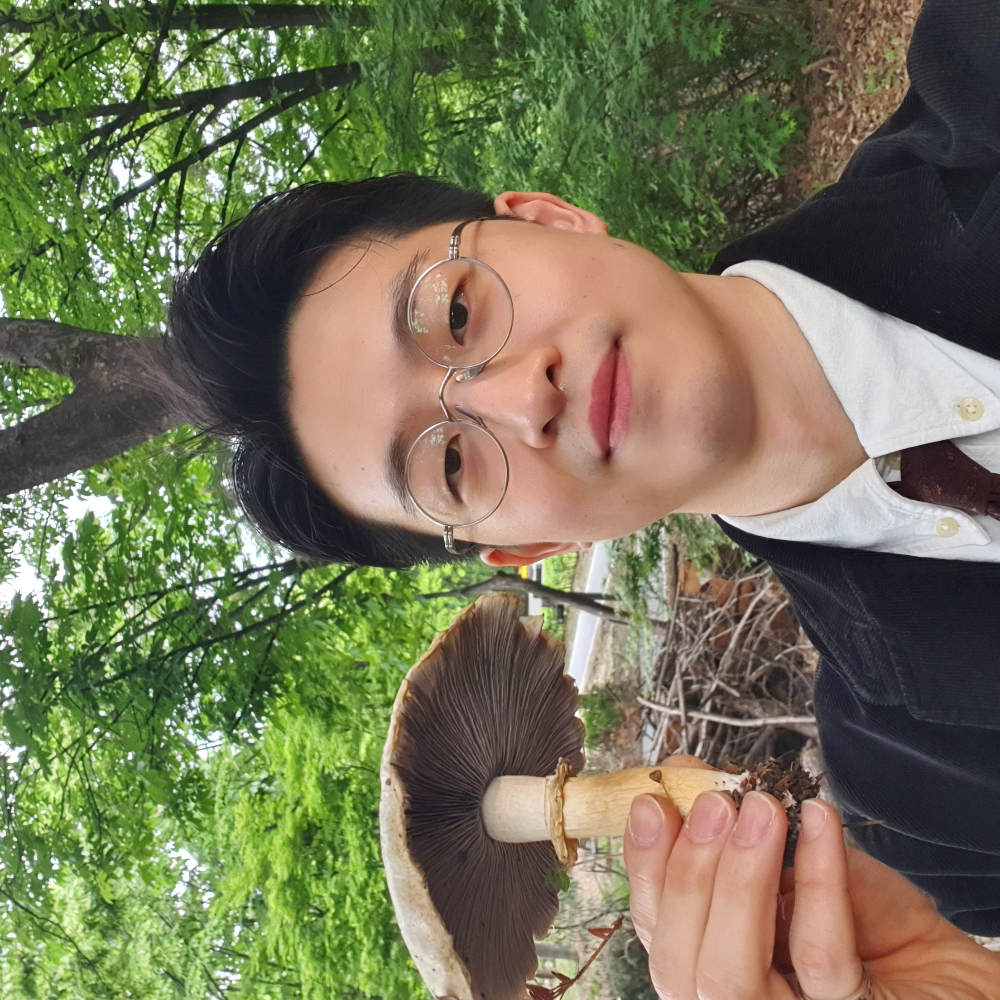

Shinnam Yoo
Mycological Researcher
Microbial Community Ecologist
I have a passionate interest in various aspects of fungi. Currently, my research focuses on the microbiome and metabolism of one of the most prized mushroom, Tricholoma matsutake. I hope my research will one day contribute to biodiversity conservation and preventing climate change. In my free time, I enjoy foraging mushrooms and educating others about the fascinating world of fungi.